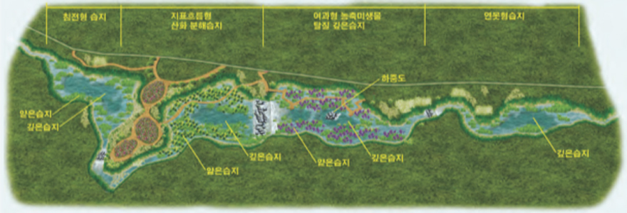
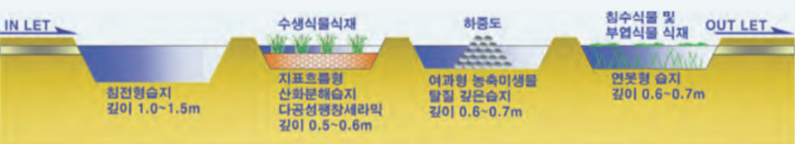
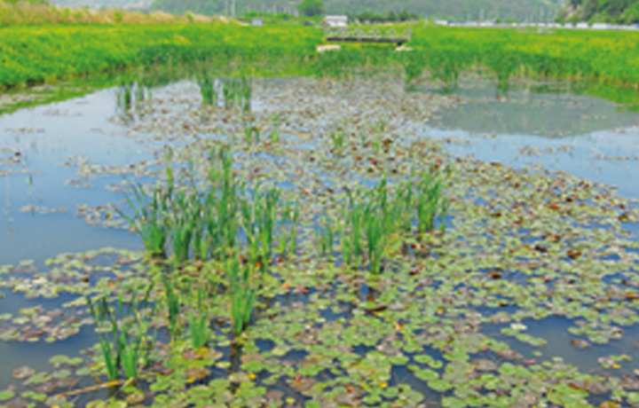
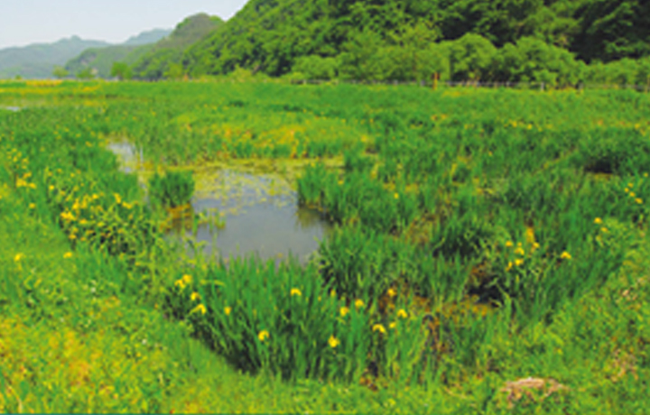
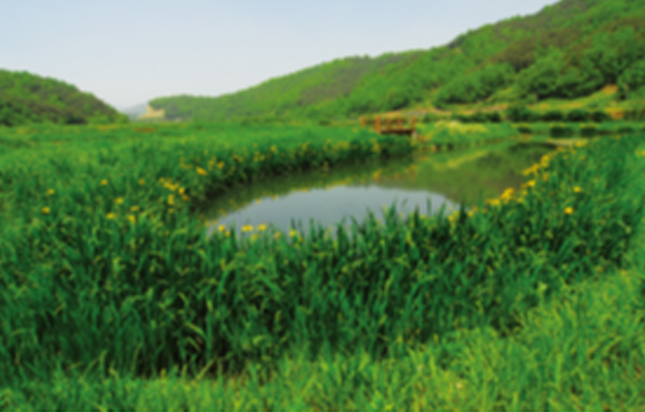
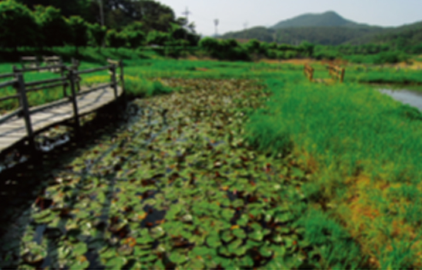

회사소개
비전
연혁
사업실적
인증현황
오시는길
유역통합물관리
도시물순환
물순환체계
나무여과상자
식물재배화분
무관리 옥상녹화
모듈형 침투통
레인가든
침투도랑
농촌유역관리
고효율 인공습지
소규모 공공하수처리
해외사업
제품 및 소재
생산시설
다공성세라믹담체
빗물머금석
포러스샌드
LID용 식생토
KR
EN
CN
농촌유역관리
농촌유역관리
고효율 인공습지
고효율 인공습지
고효율 인공습지
수질정화 인공습지
생태복원형 인공습지
개요
침전형 습지, 지표 흐름형 산화분해 습지, 여과형 농축 미생물 탈질 깊은 습지, 연못형 습지로 이루어진 복합형 습지
얕은 습지 내에 깊은 습지를 설치하여 다양한 식생 추이대를 형성함으로써 생태환경을 복원시킴
세라믹담체에서 용출되는 칼슘이온에 의한 미생물의 활성을 촉진 시킴
바실러스 미생물과 광합성홍균을 이용해 만든 농축미생물 담체를 깊은 습지내 징검다리 형태의 바위돌 격벽에 채움으로써 오염 물질을 효과적으로 제거할 수 있음
이중 목적의 얕은 습지 구성으로 초기 강우(도로, 교량, 시가지), 농경지 배수 등으로 인한 비점오염원 처리에 효과적임
아시네토박터 칼코아세티쿠스 미생물을 다공성팽창세라믹에 고착시켜 폐유 등 도시비점오염원 제거
시스템 평면도

시스템 단면도

사업 실적
동복호 생태복원 습지
사업명 : 동복호 생태복원 습지 조성 사업
용량 : 10,000ton/day
준공일 : 2006. 06.
적용 사례

동복호 생태복원 습지

이서천 비점오염원 처리 습지

내복천 비점오염원 처리 습지

주암호 녹조 방지 습지